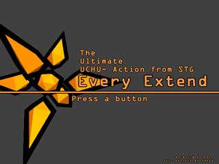
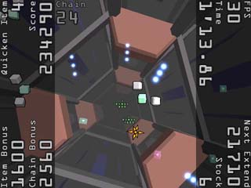
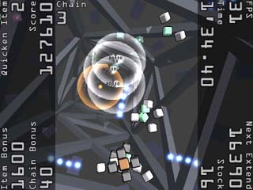

Every extend is a crazy little 2d game where you blow yourself up to destroy the enemy boxes.
the game has been described as follows
basically you get twelve bombs, and you try to blow up as much as possible. unlike most games, you want the enemies to come faster, because that's when you can get the most enemies.
start screen:
in game:
blowing up:
This game is ridiculously addicting; vv33 have already been playing it for days.
the only catch is that you need winrar to open it. you can dowload it here:
http://www.download.com/3000-2099-10347823.html
or learn more here:
http://everything2.com/index.pl?node_id=1722714
edit: According to Samrat16, you can just Google "every extend.zip," and there will be a download in that format.
the game has been described as follows
QuoteWhen a certain day suddenly, 12 machine thing space guidance bombs reach in you, how it does?
New feeling suicide bombing Gaea. Self-destroying, self-destroying, involve the enemy!
basically you get twelve bombs, and you try to blow up as much as possible. unlike most games, you want the enemies to come faster, because that's when you can get the most enemies.
start screen:

in game:

blowing up:

This game is ridiculously addicting; vv33 have already been playing it for days.
the only catch is that you need winrar to open it. you can dowload it here:
http://www.download.com/3000-2099-10347823.html
or learn more here:
http://everything2.com/index.pl?node_id=1722714
edit: According to Samrat16, you can just Google "every extend.zip," and there will be a download in that format.

 ) believes that it's some kind of ber alpha program that wont let me install other similar on the computer.
) believes that it's some kind of ber alpha program that wont let me install other similar on the computer.